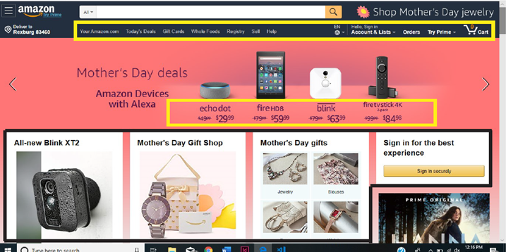
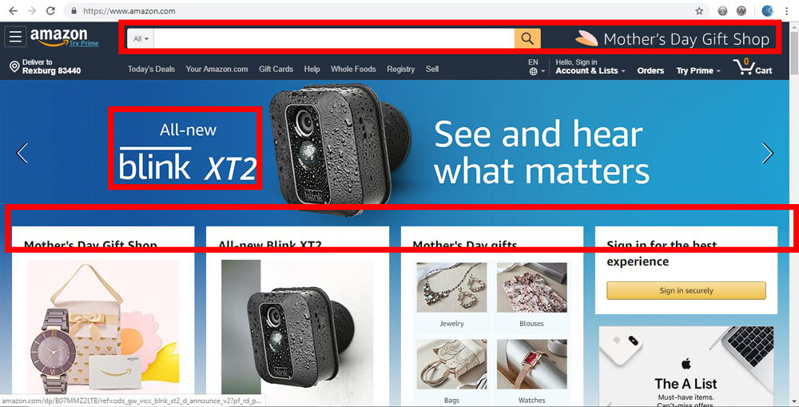
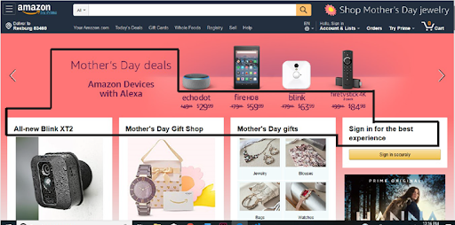

Design - Analysis Assessment
https://www.amazon.com/
Design Principles
Proximity — Lystra Zibiah Thamizhmaran

The Proximity in this website is so clear and the sharpness is well presented and the relationship between the products is so clear where the audience will be able to easily find the products that they need immediately. It is so clear and visible that the border makes the audience get attracted to the products that they are selling. The Proximity in this website makes the product closely together in one unit, where the objects are so visible for the audience to find.
Alignment — Madison Whitlock
Repetition — Kianna Baird
Repetition is shown all throughout the website. One in particular is the font. They have chosen the same font all throughout the website. In the heading, they have also chosen to use white as a repetitive color for the writing as well as the background colors in each of the item boxes.
Contrast — Serena Spotten
Contrast is a big part of any website. Without contrast the page would look very flat and uninviting. Contrast is also a way to guide your viewers toward points of interest on the site. In this example I have outlined in read where some of the points of highest contrast can be seen. The first is the search bar, which is one of the first things that you see when you look at the sight because the contrast of the white against the dark blue makes it stand out. Since this is a shopping site, it helps the viewer know where to go to search for the products that they want. The text itself is also a point of heavy contrast, which makes it easy to read. Lastly, your eye moves toward the white boxes in the bottom because the box is easily seen against the dark blue image in the back. These points of contrast draws your eye where the site wants you to look first, seconds, and then third as you go down the page.
Typography — Kianna Baird
They have chosen to use the same font all throughout their website. You can see on the home page that the font is the same, but they have used different weights emphasizing specific titles.
Site Purpose Statement
Target Audience
- Age:
- Occupation:
- Income:
- Other:
Persona
- Name:
- Occupation:
- Primary Device: Laptop
- Quote: